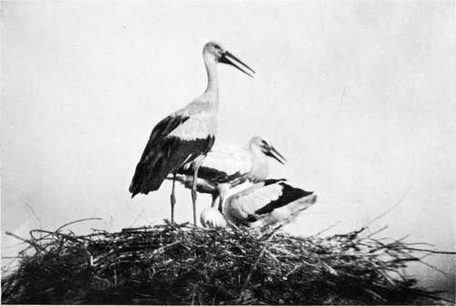

Collecting In The Dobrudscha. Part 3
Description
This section is from the book "Bird-Hunting Through Wild Europe", by R. B. Lodge. Also available from Amazon: Bird-Hunting Through Wild Europe.
Collecting In The Dobrudscha. Part 3
The moment the sharp, upturned prow of our lodka pushed through the fringe of reeds which concealed some more open pool, squattering flocks of Coots and White-eyed Pochards (Fuligula nyroca) would hasten into the dense growth and be lost to sight.
Presently, at the far side of a large lake we were crossing, we saw a pair of Swans, and my guide cautiously entered the reeds and made signs that we were approaching the nest. The last hundred yards we progressed with the utmost slowness and caution, pulling ourselves forward with our hands ; but the nest when we reached it was empty, and had not been occupied for at least twenty-four hours ; so that my hopes of an automatic photograph of old or young, by leaving the electric camera, were doomed to disappointment.
For some time we hunted about for another nest, but only succeeded in finding one that was submerged under more than a foot of water by a recent flood. The labour now expended in forcing the lodka through the dense reeds which towered over our heads was excessive ; sometimes all our efforts could not move the boat an inch. The heat was terrific ; and shut in as we were by gigantic reeds there seemed to be no air to breathe. We were enveloped by dense clouds of hungry mosquitoes and poisonous flies nearly as big as wasps, which fetched blood at every bite, so that even the bare, horny feet of the fisherman were streaked with blood.
Other insects, too, of a more interesting nature were there in great numbers. I had been asked to keep an eye open for specimens of the larva or pupa of the moth Loelia coenosa, which at one time was to be found in our own Eastern counties, but which is now extinct. Curiously enough, I had seen one larva in Montenegro, but not knowing that it was of any interest had not troubled about it. While struggling in this desolate place I suddenly saw a similar larva on a reed-leaf we had passed. Making signs to the Russian to go back a little it was soon found, and proved to be identical, and I then examined the reeds with more care as we progressed. No more larvae could be seen, but very many elongated whitish cocoons were discovered on the stems of the reeds. I had no evidence that these pupa cocoons were related in any way to the larvae, but had strong suspicions that they might be, and soon collected a goodly number, only to find that the majority were empty, the moths having emerged. That led me to connect the cocoons with the numbers of small whitish moths which were fluttering about the reeds and settling- on our clothes and about the boat.
Here was a scarce and valuable insect literally to be seen in thousands, and I had nothing in which to take the specimens or to keep them undamaged until my return, not having provided myself with an entomological collecting apparatus.
After emerging with the greatest difficulty from this place we found a big colony of Common Terns (Sterna fltiviatilis) and the graceful Little Black Tern (Hydrochelidon nigra) nesting on the floating masses of roots of the water-lily in very deep water. These roots, matted together into lumps of varying sizes, formed floating islands on which the birds had laid their eggs. Here, too, were many nests of the Black-necked Grebe (Podiceps nigricollis).
The scene everywhere was of great interest, and of remarkable beauty. The many floating islands of gigantic reeds, with their undergrowth of ferns of a vivid green, reflected in the deep water; the water-lilies, and other water-plants strange to me, made up a strange but enchanting picture. But I could not help wondering what chance I should have of ever escaping from this watery labyrinth if anything were to happen to my boatman. Our boat, which was nothing but a canoe sharp at both ends, had turned and twisted in a dozen different directions, through channels each one of which exactly resembled the other, and through reeds which closed up and had completely hidden any trace of a passage. There was no dry land, nothing but water of varying depths, reeds, water-plants, and floating islands which tip up when you put a foot on one, or sink bodily under your weight. At rare intervals, groups of willow-trees stand up out of the sea of reeds. In one of these we found the beautiful swinging nest of a Penduline Tit, but it was not quite finished, the spout being still wanting.
White Storks (Ciconia Alba)
We spent a couple of days in this neighbourhood, and I photographed a family of White Storks on a hay-stack close to our lodgings. The orchards in the village were much infested with the huge larvae of Saturnia major. Very curious and beautiful objects they were. One man gave me a hatful of them, and I found some myself on the apricot-trees. They were full-grown, so that I put them into some small cardboard cartridge-boxes, feeling sure that they would spin up inside, which they did. It would have been impossible for me to have looked after them and fed them while on this boat expedition, always on the move.
From here we went back to Sulina, where I slept one night in the hotel. It is a miserable place, infested with hordes of bloodthirsty mosquitoes, which must render miserable the lives of those unfortunates doomed to live there. During these hot summer evenings everybody sits outside the cafes and restaurants, listening to the tinkling strains of the zithers and guitars of Jewish and Greek girls, who sing Roumanian melodies, not forgetting to come round with the hat, or with a big shell, at frequent intervals. But I have seen the singers fairly stopped sometimes by mosquitoes, and handkerchiefs and fans are in constant motion in the attempt to keep moving the poisonous throng of winged tormentors. Fans are in regular use by men as well as women here. The feeble light of the oil-lamps in the streets is almost obscured by the countless numbers of insects, in spite of the stifling fumes of the bonfires of reeds kept burning in the streets during these evening hours. Grumblers who complain of the vicissitudes of the English climate ought to be condemned to pass a summer in Sulina, just to see how they like it.
Continue to:
- prev: Collecting In The Dobrudscha. Part 2
- Table of Contents
- next: Collecting In The Dobrudscha. Part 4